The Forehand Return¶
By Kerry Mitchell¶
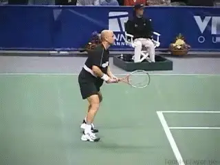
All time great players are also great returners.
Returning well is essential in the game of tennis. With a good return a player has a chance to win every match, even against the best servers. It is not an accident that so many great returners are also on the list of the all-time great players.
Jimmy Connors and Andre Agassi are often considered the best returners ever. But Pete Sampras, who was known for his great serve, was totally underrated as a returner. A player can't win 14 Grand Slams without having a great return.
In the present game, Federer has an exceptional return. His ability to counter the big servers is phenomenal. Nadal, in my opinion, will reach the level of Connors and Agassi by the end of his career. Without their return games, neither Federer nor Nadal would be where they are today.
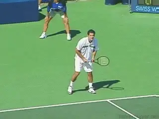
Is it better to learn to block or swing?
To me, there are two important distinctions that every player needs to understand to become a better returner. The first distinction is between blocking and swinging.The other distinction is between the swings on a return and the swings on a regular ground stroke. In this article we'll look at the forehand return and see what these distinctions can teach us. In the next article, we'll see how it all applies to the backhand return.
Understanding these two points has made a huge difference in my return game as it has evolved over the years, and also, in my students. Having confidence in your return game takes a lot of pressure off your serving game. It can also create pressure on your opponent, causing him to press on his own serve, and possibly, miss serves he or she would normally make.
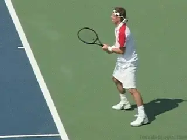
The way to develop the feeling of control is to swing.Swinging Versus Blocking
Over my 25 years of teaching tennis, I've been asked hundreds of times about how to return effectively against fast serves, and also, against spinning serves. Do I learn to swing first? Or should I learn to block?
My answer is always the same. A player has to learn to take a full swing at the ball first. You learn to block later. If a player learns to block first he may very well never learn how to swing. And he probably won't learn to block that effectively either.
Why? I believe that the only way to feel how to control the ball on the return is to swing. It's much more subtle and difficult to feel this when you block. But once you have the feeling of controlling the return, you can translate that into the more compact blocking motions.
Blocking a return requires an abbreviated motion. But in many technical respects, a block is really a more compact version of a swing. The turn is shorter.But there is definitely a turn.The follow-through is shorter.But there is some follow-through.Most importantly, the racket needs to be sufficiently in front at contact.
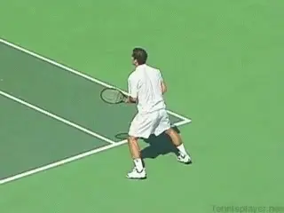
The block should be instinctive, but with sound fundamentals.
A full swing teaches a player all these parts of the return. Players need to feel these parts before they can abbreviate them. If you don't understand how to make a unit turn or how to move the racket through the contact point, how can you execute more compact versions of the same motions?
The decision to hit a block return should be an instinctive decision. But many lower-level players try to block returns for the wrong reasons, usually because they don't prepare, or prepare so late that swinging is not an option. Learning the timing of the swing also helps players develop the instinct to know when swinging is not possible.
Blocking the ball back at the pro level has become a more common strategy because of the lack of serve and volley players. A player can block back a huge serve, hitting it high and deep without the fear of the server taking it out of the air.Against certain players this is an effective strategy because it neutralizes a big serve and puts the returner on an even playing field. This is one reason Federer does so well against Roddick and the other big servers as well. But I believe if you ask a professional player what he would prefer to do on the return "block it back" or "take a swing" the answer would be to swing.
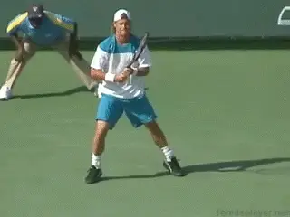
Compare the height of the hand and the shoulder turn on the return versus the forehand groundstroke.Return Versus Groundstroke
If the block return is a compact version of a swing return, then a swing return is a compact version of a groundstroke. The differences in the size of the swings can vary from player to player, and also from ball to ball, but let's discuss the issue first in a general way.
Compared to the return, there is usually more shoulder turn on a groundstroke. The most obvious difference, however, is the size of the backswing. Virtually every player takes a larger backswing on the groundstrokes. By contrast, with the return, the players flatten out the looping motion in the take back.
With some players the difference between the groundstroke and the return is obvious. Lleyton Hewitt, one the game's best returners, is probably the most dramatic example. Watch the backswing in the animation as Hewitt hits a forehand return and compare that to his forehand groundstroke.
On the return, look at the height of the hand. At the highest point, it reaches about the level of his nose. Now compare that to the groundstroke. Hewitt's hand is much higher, about 6 inches above his head, possibly 2 feet higher than on the return.
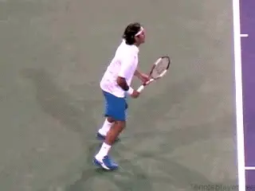
Federer is more compact on both his return and his forehand.
I have always maintained that if Hewitt had the take back of his return on his ground stroke, his forehand would be much more of a weapon, but that's another story.
It's a little harder to see, but the same thing happens with the shoulders and hips. There is definitely a strong body turn on Lleyton's return, with his shoulders turning roughly 90 degrees to the net. But on the groundstroke, he pushes the turn further, with the line of the shoulders usually going past perpendicular to the net.
Other players are more compact on both the groundstroke and the return, which can make the differences seem less apparent. You can see this in the animation of the Federer forehand, compared to forehand return on a first serve.
The difference may not look as obvious, but proportionately, Roger is compacting his motion as much as Hewitt. On the return, his hand appears to be just slightly above his waist. On the groundstroke, it reaches a maximum height at around the shoulder or a little higher. (For more on a great drill to work on flattening out the take back, check out Nick's Bollettieri's return article. link.)
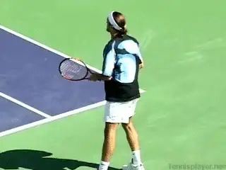
The size of the backswing is flexible depending on the type of return.
You can see the same thing with Roger in the amount of shoulder turn and the line of the shoulders to the net. On the return, Roger turns somewhat less than 90 degrees to the net. But, like Hewitt, he pushes the turn slightly past the perpendicular on the groundstroke.
There are exceptions to the more compact return. Typically, players use a larger backswing is when they run around the ball, often moving back up to several feet to hit the return. Usually this happens on second serves. (link to read more about this in Bobby Berstein's return article.)
The goal is to hit a more aggressive return. This is reflected in the size of the backswing, as you can see in the Federer second serve return animation. Notice the height of the hand is now at about shoulder height, very similar to the groundstroke. There is often a bit more of a shoulder turn as well.
This variation in the return backswing just underscores my basic point. Good player's vary the size of the swing to the ball and the shot. All are variations on a theme that goes back to the mechanics of the groundstroke itself.
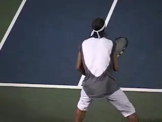
Players vary the follow-throughs but still hit through the return.Follow-throughs
Focusing on following through is a huge key to a great return. It's the same as for the groundstrokes. There is also a relationship between this ability to hit through the shot and the ability to create the correct contact point at the front edge of the body.
Players definitely vary the follow-through depending on the particularly ball. But you can see that in all the returns the swing continues well past the contact and extends substantially in the direction of the shot. Learning the follow-through will translate into a feel for the correct contact point even when players compact the motion further and chose to block.
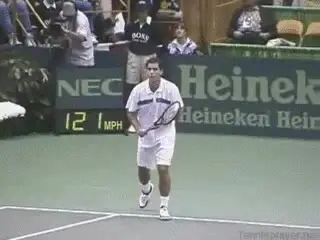
\ The elements of turn, contact, and follow-through on the block.The BlockSo what about that "block" return? There are two things to understand that make it different from the swing return. These are grip and spin.When it comes to spin, the block return is usually hit with much less topspin, sometimes almost flat. It is also often hit with underspin or slice.
Effective block returns are also usually hit with some version of a continental or backhand grip. On the backhand side, block returns are almost always hit with one hand. The use of underspin also predominates on the backhand side. These are important differences.
So what do block returns have in common with the swinging returns? The first thing is the shoulder turn in the preparation. Watch in the Sampras animation how the motion begins with the unit turn. The shoulders turn only slightly less than on the drive return.
Second, the racket goes forward and through the shot. There is a noticeable follow-through, though again less than the swing return. The contact point on the block can be later than the drive, but it is still at least at the front edge of the torso. This sequence of events, turn the body, contact in front, extend through the contact into the follow-through will be natural for players who have learned to hit effective swing returns.
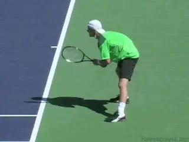
Players may start bent over, with a narrower stance, but look at the posture at contact.The Ready PositionNow let's go over some of the other basics of all types of returns, starting with the ready position. The feet are at least shoulder width apart, but can be substantially wider.The base widens even further after the split step.
The knees are bent. Again, this can vary in amount. Some top players bend deeply, some only bend a little. This bending action may also include a substantial bend of the waist. The amount of waist bending varies amongst the pros. But as the toss goes up, the top players all straighten up, standing upright at the time of the actual return. Like all shots in tennis a player should never be bent at the waist when contacting the ball if at all possible.Footwork
The footwork at the start of the return is often overlooked. The footwork actually begins with one or sometimes two small steps prior to the split step.These steps can be either forward or backward.
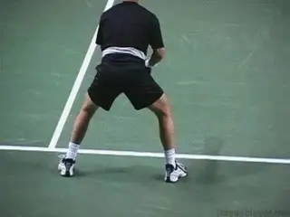
One step forward usually precedes the split step.
For years I have maintained that a serve is not that much different from a short ground stroke, especially at the lower levels. Keep in mind on a serve, the ball has to land inside the service line to be good. If you receive a ground stroke that lands inside the service line, it's natural to attack it with a full swing.The difference with the serve of course is that the velocity can be 50% or a 100% higher. Another difference is that on a ground stroke, you are usually already moving. On the return you also have to initiate the movement from a stationary position, which takes more time and energy.You must react and begin your motion as soon as possible and this is where anticipation is needed.
These are things that can make the return more difficult, but from the mental point of view, thinking of the return as a short groundstroke can be very helpful.AnticipationAnticipation is not just one thing, it is many things. Serving anticipation requires memory and perception skills more than anything else. These skills help you recognize the patterns of speeds, spins, and placements used by a particular server.
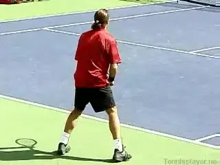
When players anticipate serve placements, it can drastically increase return effectiveness.
A great example comes from a high school doubles match I coached several years ago. Our opponents were both ranked juniors with hard serves. My guys were not ranked, but through several years of hard work, had become exceptional doubles players, and had beaten several teams with players who had more individual talent.
In the first set I noticed that one of their players served exclusively wide serves in the deuce court. Our stronger player played the deuce side and had a great forehand. Surprisingly though, he had not picked up on the pattern, and was getting caught consistently stretching for his returns.
After I pointed this out, my player moved over and made a big return, hitting a clean winner past the big server. From that point on the match turned in our favor. When our player started making aggressive returns, our opponent lost confidence and the rest of his game started to come apart as well. We won the match in straight sets.
That scenario may seem obvious, but I have seen many club players lose winnable matches because they were unable to recognize serving patterns. Other scenarios might be more subtle---the server only serves down the middle on the ad court on important points like 40-30 or 30-40. But anticipation in returning means keeping track of where and what kind of serves the server is hitting throughout the match. That way you can start to move to the right spot as the toss goes up.
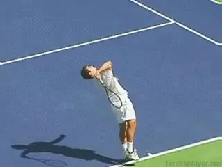
Subtle differences in tosses and contact points indicate differences in spins and placements.Another way to anticipate as a returner is pay attention to the toss. If the server has a good kick serve, pay attention to where he tosses the ball. Often when he plans to hit with more kick, the toss will move slightly further over his head, slightly to his left--your right. Look at the animation of Sampras. These are both kick second serves. Which one do you think he hit with more spin?
A server may only hit his flat serve one direction and his spin serves in another. A good communication exercise between doubles partners is to see who can pick up serving patterns first. When your team starts to see a pattern you can start to anticipate it.
The best example of this on the pro tour is the match up between Federer and Roddick. Federer always seems to know where Roddick is going to serve, giving him a better chance to return those bombs that come off Roddick's racket.
Roddick like most servers has definite patterns and I'm sure Federer knows exactly what they are, so on big points Federer has a good sense where the serve is going. Roddick likes to serve wide on the deuce court and down the middle on the ad court. The problem is that these serves go into Federer's strength, the forehand.
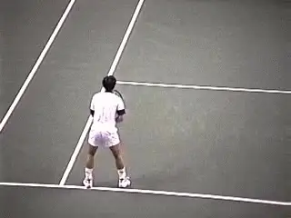
Michael Chang: great returns and a great return drill.Return Practice
If you are a competitive player, returning serve has to be an essential part of you practice routine. I saw Michael Chang a long time ago warming up his return at an event in San Francisco.
Carl Chang, his brother and coach, was on the other side, standing at the service line. From there he was hitting serves at full speed at Michael. What was amazing about it, was that Michael was hitting these huge returns back. He was not blocking them, but cracking them back with a full swing.
That practice drill was a real eye opener to me, and one I've used ever since. Work this drill on a regular basis and your preparation will accelerate, your backswing will flatten, and your movement will get better. With practice you may be surprised what you can do with your return.
So that's it for the forehand return. Many of the same points apply on the backhand return, and there are some differences as well. We'll take a look at that next. Stay tuned.

Kerry Mitchell was a leading Bay Area
numerous ranked junior players and coached
a series of championship high school teams.
He was highly ranked both sectionally and
nationally in men's 30 and 35 singles.
After 15 years as the Head Teaching Pro at
the John Yandell Tennis School in San
Francisco, California Kerry and his partner
are now splitting time between homes in
Merida, Mexico and Toronto, Canada. He has
continued to coach and to have great
competitive success winning Canadian
National seniors titles---not to mention
continuing to write articles for
TPA from his unique perspective.